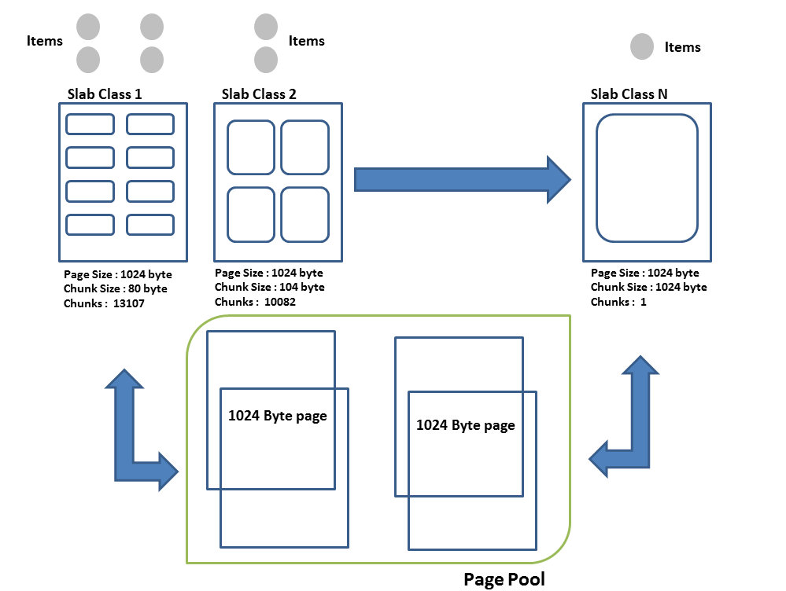

Memcache
Table of Contents
1 原理
1.1 数据结构
| Item | 即一个键值对（= key + value + flags）。 |
|---|---|
| Chunk | 保存数据的最小单位。 |
| 大小固定，数据放入之后的剩余空间无法利用。 | |
| Slab | 由同样大小的 chunk 组成的集合。 |
| 不同 slab 之间的 chunk 的比例关系由增长因子决定。 | |
| Page | 内存分页，固定大小为 1M，是申请内存的最小单位。 |
| 分页大小 = chunk 大小 x chunk 数量 | |
| 分配给某个 slab 的内存页，不能再重新分配给其他 slab。 |
- 增长因子
- growth factor
- 默认值 = 1.25

1.2 过期
| 0 | 永远不过期 |
|---|---|
| <= 30 * 24 * 3600 | 解读为秒数 |
| > 30 * 24 * 3600 | 解读为 UNIX 时间戳 |
| Lazy expiration | 不主动将数据标为过期，只有查询到这个数据时，才会检查是否过期。 |
2 命令行
memcached <options> <options> # 内存参数 -m <num> # 最大内存空间（MB），默认 64 -n <num> # item 最小占用字节数，默认 48 -f <num> # 增长因子，默认 1.25 <options> # 运行参数 -p <port> # 监听 TCP 端口号，默认 11211 -U <port> # 监听 UDP 端口号，默认 11211，0 表示关闭 -c <num> # 最大同时连接数，默认 1024 <options> # 运行设置 -d # 作为守护进程 -v # 打印错误、警告 -vv # 打印客户端命令、响应 -vvv # 打印内部状态转换（transition） <options> # 一般 -h # 帮助 -V # 版本信息
2.1 CRUD
| 读 | |
|---|---|
get |
单条 |
get_multi |
多条 |
| 写 | |
set |
插入，如果 key 已存在则替换 |
add |
插入，如果 key 已存在则返回 STORED |
replace |
替换，如果 key 不存在则返回 NOT_STORED |
cas |
改变一个存在的 key 值 ，带有检查功能（？） |
append |
添加，在给定 key 之后 |
prepend |
添加，在给定 key 之前 |
delete |
删除 |
<flag>：16 位无符号整数，作为标志位，意义取决于客户端的定义。
2.1.1 set
set <key> <flag> <expire_seconds> <value_bytes> <value> > STORED
2.1.2 get
get <key> > VALUE <key> <flag> <value_bytes> > <value> > END
2.2 状态
stats |
全局状态 |
|---|---|
stats curr_connections |
|
stats items |
|
stats slabs |
2.2.1 stats items
evicted |
「踢出」次数，如果过大，证明分配的内存不够 |
|---|---|
reclaimed |
超时回收次数，如果过大，证明过期时间设置太短 |
3 PHP
3.1 客户端
| pecl/memcache | 直接使用 memcache daemon。 |
|---|---|
| 只支持基本功能。 | |
| pecl/memcached | 封装了 libMemcached 库，使用 igbinary PHP 扩展。 |
| 支持附加功能。 |
3.2 Session
session.save_handler |
设为 memcached 以用于存储会话数据 |
|---|---|
session.save_path |
存储路径，eg. tcp://host1:11211, tcp://host2:11211 |
不推荐用于存储 session 数据：
- 如果用户登出，session 应当结束，没有必要继续保存数据。
- 如果因为故障，部分缓存数据丢失，session 不应该受到影响。
3.3 示例
$servers = array( "10.1.1.1", // web1 "10.1.1.2", // web2 "10.1.1.3", // web3 ); // 初始化客户端，为避免内存泄露，尽量只初始化一次 $memcache = new Memcache(); foreach ($servers as $server) { $memcache->addServer($server); } $sql = "SELECT * ... WHERE id = $id"; $key = 'SQL:' . $id . ':' . md5($sql); $data = $memcache->get($key); // 缓存未命中 if ($data === false) { $data = array(); $res = mysql_query($sql, $mysql_connection); while ($rec = mysql_fetch_assoc($res)) { $data[] = $rec; } // 数据库查询结果放入缓存，有效期 10 分钟 $memcache->set($key, $data, 0, 600); } return $data;